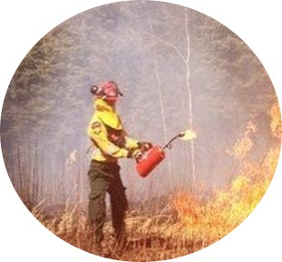

Elaine Bradbee
Cartographic Specialist
Daiva Paznekas
Cartographic Specialist

Samantha Libby
Applications Specialist
Elaine is well-trained in analysis from her career as a paralegal. She has led teams preparing projects for completion and has trained both colleagues and clients in new areas of law and processes. Ms. Bradbee is experienced in learning new tasks and software quickly. She grasps the needs in a project and can plan and prioritize what is needed to finish the job on time. Her GIS skills are well developed through training at Fleming College.
Daiva has both an educational and professional background in wildfire management. With areas of study including emergency management and forest technology, as well as being a wildland firefighter, Daiva has an in-depth and real-life understanding of the project background. This provides perspective in terms of what the client does and what their needs are, which was helpful in providing the NCC a practical solution that will be easy to integrate into their organization
Samantha has a bachelor’s degree in Environmental Studies from York University. While at York, she took classes that included topics of environmental management, risk assessment, urban planning, qualitative data analysis, and discovered GIS through an introductory course. In order to expand her GIS skill set, she moved on to complete Fleming College’s post-graduate diploma. She has since gained practical GIS skills using the Esri ArcGIS Suite of products and relational database management systems.